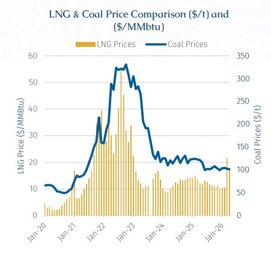
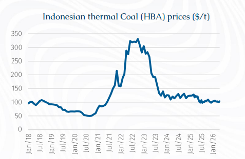
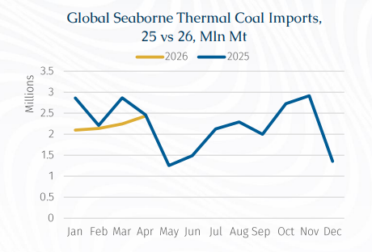
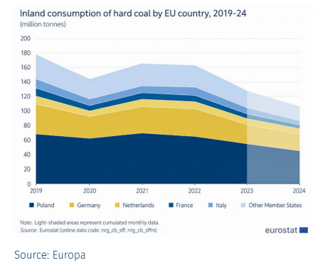

From Gas to Coal in the EU
Amid escalating US-Iran tensions and in the closure of the Strait of Hormuz, energy markets have entered a period of heightened volatility. Given that the Middle East accounts for over 20% of global oil and gas exports, disruptions have materially impacted pricing dynamics. Notably, the combination of the Strait’s closure plus Iranian attacks on Qatari LNG facilities have tightened markets and propelled global natural gas prices higher. Looking forward, high prices could impact the replenishment of natural gas reserves during the Northern Hemisphere’s shoulder season.

In response to elevated energy costs, several countries, particularly across South Asia and the EU, have reverted to coal as a more cost-effective alternative to natural gas in their power generation sectors. A key constraint on gas-to-coal switching versus the 2022–23 energy crisis period is that a substantial amount of coal-fired generation capacity has been permanently retired over the past decade, particularly across Europe.
As a result, the system today simply has far less latent coal-fired optionality available to respond to high gas prices or supply shocks. This shift has further supported seaborne thermal coal demand, with European buyers increasingly sourcing cargoes from Indonesia and Australia, which accounted for 49% and 20% of volumes respectively in 2025, according to AXSMarine data. Atlantic basin routes have been strengthened, Colombia’s position as a key coal exporter supplying the EU has become increasingly significant.

In Asia, seaborne demand for coal has remained supported, with Indonesia’s easing of RKAB-related production restrictions improving export availability. While policy easing through the imposition of taxes has also resulted in upward revisions to benchmark coal prices (HBA), with levels increasing to around $103.43/mt depending on calorific value, the market continues to be primarily underpinned by structural coal demand from China and India.
In contrast, Europe has emerged as a more prominent marginal demand driver. Increased coal inflows into the region have supported utilization for Kamsarmaxes and Capesizes, particularly as energy security concerns and LNG price volatility encouraged temporary coal switching. Nevertheless, underlying demand erosion remains intact as coal-fired generation capacity continues to be retired and demolished across the region.
Overall, coal trade flows are expected to remain supported in the near term, although the price spikes observed in 2021-2022 highlight the market’s sensitivity to supply-side disruptions. Looking ahead, demand dynamics are likely to remain regionally differentiated, with Asia providing structural support, while Europe continues to act as a swing demand factor depending on energy prices.
Notably, an earlier price surge was recorded in 2018, following a shift from coal-fired to LNG-based power generation amid the implementation of EU ETS policies. At that time, elevated LNG prices, combined with constrained coal supply, resulted in a sharp increase in coal prices. A similar pattern was observed in 2021, when thermal coal prices spiked again, driven by the post-pandemic economic rebound. The rapid recovery in demand outpaced supply, pushing prices in the European Union to exceptionally high levels, reaching $298/mt.
In 2022, prices surged once more across the European Union, primarily due to LNG shortages linked to the Russia-Ukraine conflict. This prompted a temporary reversion to coal-fired generation, thereby boosting coal demand. Looking ahead to 2026, Reports suggest that the Italian government has signalled a renewed reliance on coal, with several industrial players extending the lifespan and utilisation of soon-to-be-retired coal-fired power stations in response to persistently high gas costs and ongoing supply uncertainty.

Return back to coal: The impact on the ETS regulations compared to South East Asia
Currently, the EU ETS encompasses a broad policy framework, comprising over 55 measures while targeting emissions reductions across multiple sectors, notably power generation. For this reason, the EU is actively rebuilding coal inventories in order to enhance energy security and mitigate potential supply disruptions. According to AXSMarine data, cumulative thermal seaborne coal imports into the EU have totalled 5.27 mln mt since the onset of the conflict, with volumes predominantly discharged within the ARAG hub (Antwerp-Rotterdam-Amsterdam-Ghent) for onward distribution into Central European markets. This trend is primarily reflected in Kamsarmax and Capesize demand, which continues to be dominated by iron ore and coal, accounting for approximately 40% and 37% of total volumes carried, respectively. Structural incentives under the EU ETS framework continue to discourage sustained coal burn by increasing the marginal generation cost of coal-fired power relative to gas. At current carbon prices of around €75/t CO₂e, coal-to-gas switching economics remain highly sensitive to movements in both LNG and carbon markets, limiting the scope for structurally higher coal imports outside periods of gas price stress.

While the scale of the current, Middle East-driven energy shock differs from the shock driven by Russia’s invasion of Ukraine, the underlying dynamics remain comparable, reinforcing the importance of maintaining a diversified energy mix. Meanwhile, US coal production has effectively doubled its contribution to global supply, while Australia and Indonesia have indicated their willingness to accommodate incremental demand growth and help maintain market stability.
The EU ETS role on Middle East conflict
As of writing, free carbon allocations for industrial sector are also scheduled to decrease from 2026, while some firms have already started purchasing EU ETS allowances to hedge their expected costs. In response, the European Union has also evaluated potential adjustments to the EU ETS framework. However, according to Politico, no major structural changes are expected, despite mounting pressure linked to the temporary return to fossil fuels. Instead, policy focus has shifted toward accelerating the energy transition through increased funding mechanisms. This includes the establishment of an Industrial Decarbonisation Bank backed by €100 bln, alongside additional support via the allocation of approximately €400 mln EU ETS allowances aimed at boosting green investments.
Consequently, the Middle East conflict has driven an increase in coal demand. Against this backdrop, coal trade flows from the US and ESCA into the ARAG range are expected to remain well supported over the short-to-medium term, providing continuing employment in the Atlantic Basin. While the EU’s long-term decarbonisation policies continue to weigh on the structural outlook for coal consumption, current market conditions and energy security concerns are likely to sustain import demand and underpin Atlantic Basin trading activity.